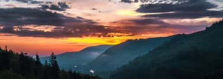

It was really cool! We saw everything - sun, snow, rain, fog! It's very exciting and interesting, you won't regret it - it's worth going and seeing everything with your own eyes. Everything is organized at the highest level.

It was really cool! We saw everything - sun, snow, rain, fog! It's very exciting and interesting, you won't regret it - it's worth going and seeing everything with your own eyes. Everything is organized at the highest level.
Good organization, everything went smoothly. Friendly guide Taras told interesting facts about the area and customs throughout the tour.

Who is going to the mountains for the first time - this is exactly the tour and the people who organize everything. Guide Makar is interesting stories, selection of a route for a comfortable ascent, motivation and support.